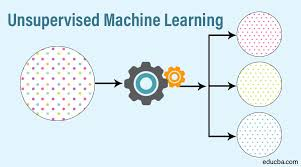

What is Unsupervised Learning?
As the name suggests, unsupervised learning is a machine learning technique in which models are not supervised using training dataset. Instead, models itself find the hidden patterns and insights from the given data. It can be compared to learning which takes place in the human brain while learning new things. It can be defined as: Unsupervised learning is a type of machine learning in which models are trained using unlabeled dataset and are allowed to act on that data without any supervision.
Types of Unsupervised Learning
- Clustering
- Association
- Dimensionality reduction
Applications Of Unsupervised Learning
- Data Exploration
- Customer Segmentation
- Recommender Systems
- Target Marketing Campaigns